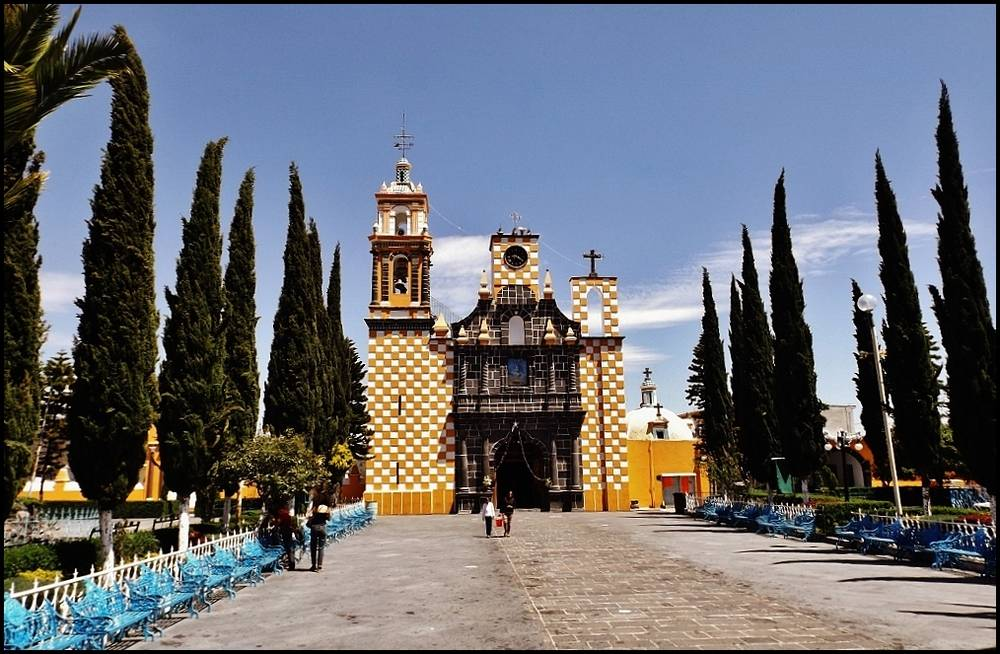

멕시코 푸에블라 농민들, 연구소와 함께 밭 위 태양광 공동체 실험…5kW 모듈로 비료 공장·가공·세 가구에 전기

산티아고 할리친틀라 마을 토나티우 사업…결정은 마을 총회에서, 생산한 전기를 여러 집에 나누는 방법은 아직 숙제
멕시코 푸에블라주 산티아고 할리친틀라(Santiago Xalitzintla) 마을 농민들이 국립천체물리·광학·전자연구소(INAOE) 연구진과 함께 밭 위에 태양광을 올리는 공동체 영농형 태양광 사업 '토나티우(TONATIUH)'를 이어 가고 있다. 2024년 8월 31일 문을 연 첫 모듈은 설비용량 5kW에 채소를 기르는 집약 재배 두둑 8개를 갖췄고, 농민들이 토마토·호박·무·고수 등을 기르며 습도·온도 기록과 작황 평가에도 함께 참여한다. 이 전기로 한 달 최대 2,000L의 바이오 비료를 만드는 공장이 돌아가 가족 경작지 35곳이 혜택을 보며, 과일 건조기와 농가 세 가구에도 전기가 들어가고, 마을 여성들은 같은 전기로 옥수수 과자·아톨레 가루·잼을 만들어 낮은 곡물값을 메울 소득원을 늘리고 있다. 연구 책임자 이스마엘 코스메(Ismael Cosme)는 "모든 결정은 총회에서 수평적으로 내린다"고 설명했다. 다만 생산한 전기를 마을의 여러 가족에게 나누는 방식은 아직 마련하지 못했고, 연구진은 비용과 성능을 따져 확대 조건을 찾는 한편 곡물 분쇄기를 들일 전기 설비 개선을 준비하고 있다.
시민에너지 관점
5kW라는 작은 설비가 비료 공장과 식품 가공, 농가 세 집의 전기까지 맡는다는 점은 태양광이 농촌의 소득 구조를 바꾸는 도구가 될 수 있음을 보여 준다. 영농형 태양광이 농사를 밀어낸다는 걱정이 크지만, 이 마을에서는 농민이 직접 재배와 측정에 참여하고 총회에서 결정하면서 농사와 발전이 함께 간다. 개발업자가 땅을 빌려 패널만 세우면 수익은 밖으로 나가지만, 농민이 주인인 사업은 전기와 일거리가 마을에 남는다. 우리 영농형 태양광 제도도 마을 총회와 농민 소유를 사업 요건으로 넣고, 생산한 전기를 마을 안에서 나눠 쓸 길부터 열어야 한다.
출처: WIRED en Español 2026-11-10 Aranza Bustamante 원문 보기
창간 전 시험 발행 기사입니다.
メキシコ・プエブラの農民、研究所と畑の上の太陽光コミュニティ実験…5kWモジュールで肥料工場・加工・3世帯に電気
サンティアゴ・ハリツィントラ村のトナティウ事業…決定は村の総会で、発電した電気を複数の家に分ける方法はまだ課題
メキシコ・プエブラ州サンティアゴ・ハリツィントラ（Santiago Xalitzintla）村の農民が、国立天体物理・光学・電子研究所（INAOE）の研究陣とともに、畑の上に太陽光パネルを載せるコミュニティ型営農型太陽光事業「トナティウ（TONATIUH）」を続けている。2024年8月31日に稼働した最初のモジュールは設備容量5kWで、野菜を育てる集約栽培の畝8つを備え、農民はトマト・カボチャ・ラディッシュ・パクチーなどを育てながら湿度・温度の記録や作柄の評価にも参加する。この電気で月最大2,000Lのバイオ肥料をつくる工場が動き、家族経営の畑35区画が恩恵を受けているほか、果物の乾燥機と農家3世帯にも電気が届き、村の女性たちは同じ電気でトウモロコシのクッキーやアトーレ用の粉、ジャムをつくり、安い穀物価格を補う収入源を増やしている。研究責任者のイスマエル・コスメ（Ismael Cosme）氏は「すべての決定は総会で水平的に行う」と説明した。ただし発電した電気を村の複数の家族に分ける仕組みはまだできておらず、研究陣は費用と性能を検証して拡大の条件を探るとともに、穀物の製粉機を導入するための電気設備の改良を準備している。
市民エネルギーの視点
5kWという小さな設備が肥料工場と食品加工、農家3世帯の電気まで担うことは、太陽光が農村の所得構造を変える道具になり得ることを示している。営農型太陽光が農業を押しのけるという懸念は大きいが、この村では農民自らが栽培と計測に参加し、総会で決めることで農業と発電が両立している。開発業者が土地を借りてパネルを立てるだけなら収益は外へ流れるが、農民が所有者である事業なら電気も仕事も村に残る。韓国の営農型太陽光制度も、村の総会と農民の所有を事業要件に組み込み、発電した電気を村の中で分け合える道から開くべきだ。
出典: WIRED en Español 2026-11-10 Aranza Bustamante 原文を読む
創刊前の試験発行記事です。
墨西哥普埃布拉农民与研究所合作开展农田光伏社区实验…5kW模块为肥料厂、加工和三户农家供电
圣地亚哥哈利辛特拉村TONATIUH项目…决定在村民大会作出，如何把电分给多户家庭仍是课题
墨西哥普埃布拉州圣地亚哥哈利辛特拉（Santiago Xalitzintla）村的农民，正与国家天体物理、光学与电子研究所（INAOE）的研究人员一起推进在农田上方架设光伏板的社区农光互补项目“TONATIUH”。2024年8月31日启用的第一个模块装机容量为5kW，配有8条种植蔬菜的集约栽培畦，农民种植番茄、南瓜、萝卜、香菜等，并参与湿度、温度记录和收成评估。这些电力带动一座每月最多生产2,000升生物肥料的工厂，惠及35块家庭农地，同时为一台水果烘干机和三户农家供电；村里的妇女用同样的电制作玉米饼干、阿托莱粉和果酱，以增加收入来源，弥补粮价偏低。项目负责人伊斯梅尔·科斯梅（Ismael Cosme）表示：“所有决定都在大会上以平等方式作出。”不过，如何把发出的电分给村里多户家庭的办法尚未形成，研究团队正在评估成本和性能以寻找扩大条件，并准备改进电气设施以引入谷物磨粉机。
市民能源视角
仅5kW的小型设备就能承担肥料厂、食品加工和三户农家的用电，说明光伏可以成为改变农村收入结构的工具。人们普遍担心农光互补会挤占农业，但在这个村子里，农民亲自参与种植和监测，并在大会上作决定，使农业与发电得以并行。如果只是开发商租地立板，收益会流向外地；而农民作为所有者的项目，电力和工作都留在村里。韩国的农光互补制度也应把村民大会和农民所有写入项目条件，并首先打通在村内分享所发电力的渠道。
来源: WIRED en Español 2026-11-10 Aranza Bustamante 查看原文
本文为创刊前试发行文章。
Puebla Farmers Test Community Agrivoltaics With Researchers as a 5kW Module Powers a Fertiliser Plant, Food Processing and Three Homes
The TONATIUH project in Santiago Xalitzintla takes decisions in a village assembly; sharing the power among families is still unsolved
Farmers in Santiago Xalitzintla, in Mexico's Puebla state, are running a community agrivoltaics project called TONATIUH with researchers from the National Institute of Astrophysics, Optics and Electronics (INAOE), placing solar panels above cultivated land. The first module, opened on 31 August 2024, has a capacity of 5kW and eight bio-intensive vegetable beds, where farmers grow tomatoes, squash, radishes and coriander and help record humidity and temperature and assess the harvest. Its electricity runs a bio-factory that can make up to 2,000 litres of biofertiliser a month for 35 family plots, and also supplies a fruit dehydrator and three farming households, while women in the village use the same power to make corn biscuits, atole flour and jams, adding income to make up for low crop prices. "All decisions are taken horizontally in an assembly," said lead researcher Ismael Cosme. A way to share the electricity among the village's families has not yet been worked out, and the team is assessing costs and performance to see what would allow expansion while upgrading the wiring to add a grain mill.
Citizen Energy View
A 5kW system that powers a fertiliser plant, food processing and three homes shows that solar can become a tool for changing how rural households earn a living. Many fear agrivoltaics will push farming aside, but in this village farmers take part in growing and monitoring and decide together in assembly, so crops and power go hand in hand. When a developer simply leases land for panels, the returns leave the area; when farmers own the project, the electricity and the work stay in the village. Korea's agrivoltaics rules should make village assemblies and farmer ownership a condition of projects, starting by opening a way to share the power within the village.
Source: WIRED en Español 2026-11-10 Aranza Bustamante Read the original
This article was published during the trial period before launch.